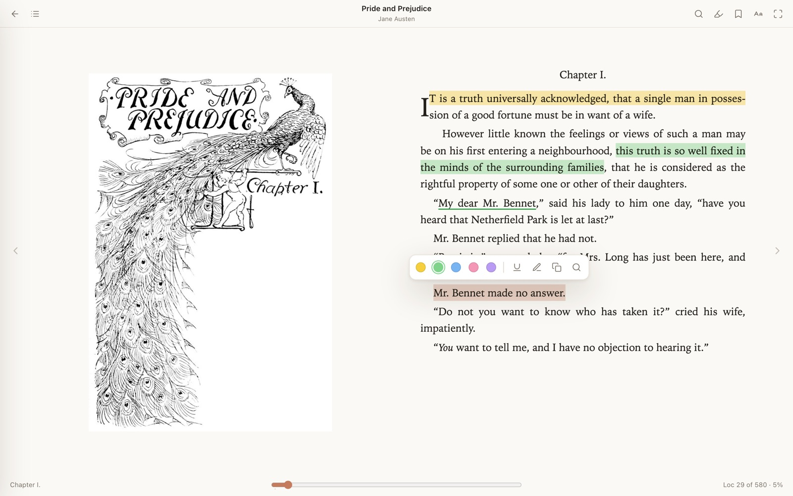
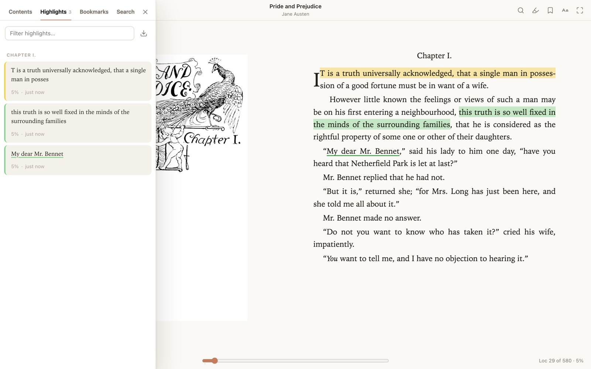
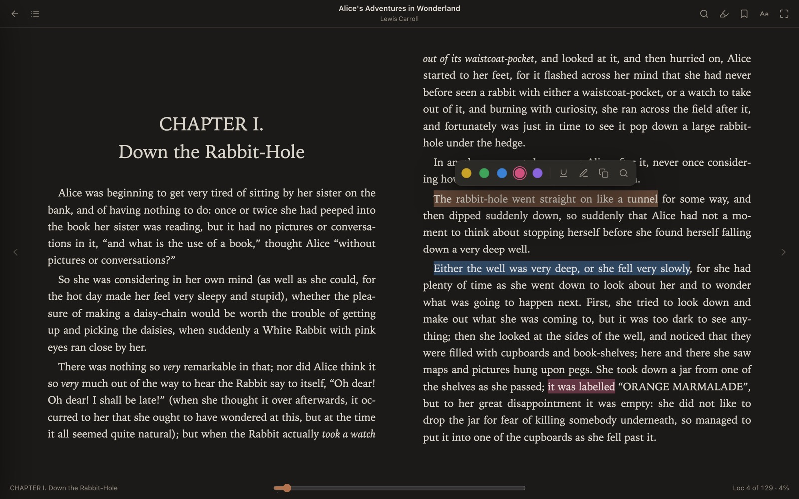
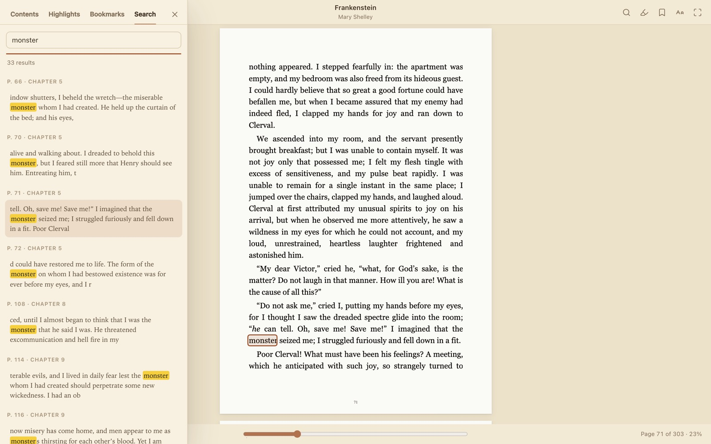
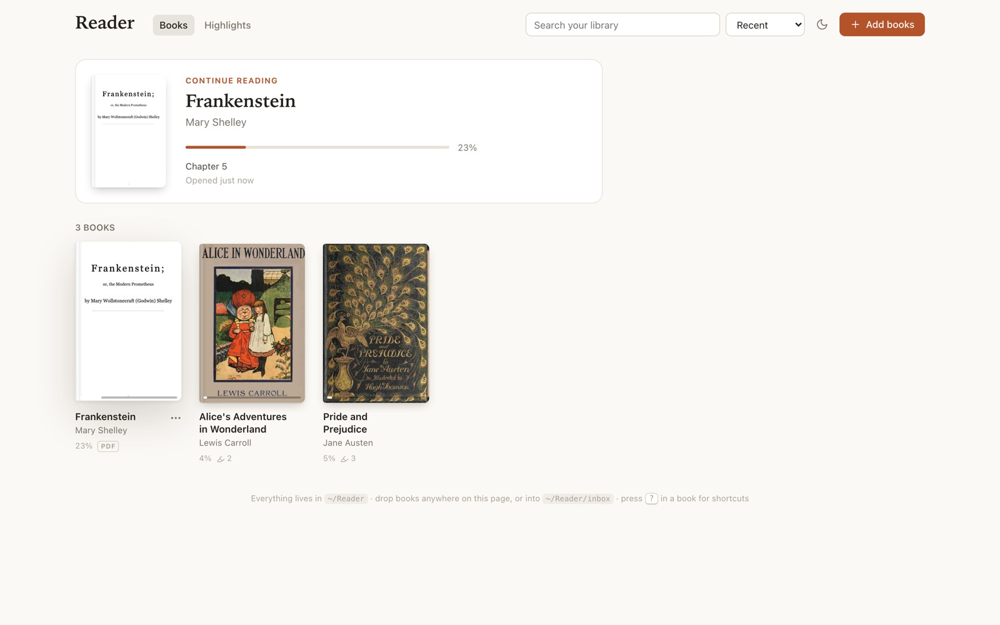

Reader is a free, private e-book reader for EPUB and PDF that runs entirely on your own machine — no account, no cloud, no tracking. Highlight, underline, take notes and bookmark in a calm, beautiful interface, even offline.
brew install --cask avirooppaul/tap/reader-app
Select any passage to mark it up. Every highlight remembers its chapter and position, and can carry a note.

Light, Sepia, Dark and true Black themes — or follow your system. Tune the typography until it feels like your book.

Smooth continuous scrolling, crisp rendering and real highlights on PDFs. Huge files open instantly — Reader only loads the pages you look at.

Drop books onto the window and they're in. Covers, progress and “continue reading” are there when you come back.
~/Reader/inbox
Nested table of contents that follows along as you read, and search across the whole book.
Page with arrows or space, T contents, N notes, B bookmark, / search, D dark mode.
One small native binary. Starts in milliseconds, idles at a few megabytes, and launches itself at login.
Reader keeps each book in its own folder with a readable book.json and an auto-updated highlights.md. Back it up by copying a folder. Grep your notes. Nothing is uploaded anywhere — the app only answers requests from your own Mac.
Reader installs with Homebrew and runs quietly in the background. You read in your browser at a secure local address.
Installs Reader plus nginx, mkcert and tmux. No build tools needed.
brew install --cask avirooppaul/tap/reader-appCreates a trusted local HTTPS certificate (macOS asks for your password once), starts Reader and enables start-at-login.
readerctl setupOpen your library and drop in your first book.
https://reader.localhost# everyday commands readerctl status # is everything healthy? readerctl open # open Reader in your browser reader add ~/Downloads/*.epub # import from the terminal reader notes pride-and-prejudice # print a book's highlights as Markdown readerctl host reader.me # use your own local hostname brew upgrade --cask reader-app # update
brew install --cask avirooppaul/tap/reader-app~/Reader, with highlights also saved as MarkdownReader is a free, local EPUB and PDF reader for macOS. It runs entirely on your Mac, works offline, and keeps your books, highlights and notes as plain files in ~/Reader.
Yes. Reader works with no internet connection, account or cloud sync. Your books are read straight from your disk, and Reader only accepts connections from your own Mac, so nothing you read or highlight leaves it.
Yes. Reader is free, with no subscription, ads or sign-up.
Apple Books imports books into its own library and can sync them through iCloud. Calibre is a full library manager and format converter. Reader is just a reader: lightweight and keyboard-driven, with highlights you can export as Markdown and a library of plain folders you can back up, move or search yourself.
Browsers are superb text-rendering engines. Reader runs a tiny local server and uses your browser as its window, so you get sharp typography, native text selection and fast PDF rendering without a heavyweight app. It only listens on your own machine — other devices on your network are refused.
readerctl setup change on my Mac?It adds an nginx site for reader.localhost, creates a local certificate with mkcert and trusts it in your login keychain (so there is no “not secure” warning), starts Reader in a background tmux session, and adds a login item so it starts automatically. Your books live in ~/Reader.
EPUB (2 and 3), PDF, MOBI / AZW3, FB2 and comic book archives (CBZ). DRM-protected books are not supported.
Yes. If you use Claude Code, setup installs a small reader skill so Claude can answer questions about your highlights, import books, or check that Reader is running.
Run readerctl uninstall (removes the login item, nginx site and certificate) and then brew uninstall --cask reader-app. Your library in ~/Reader is left untouched — delete it yourself if you want. mkcert -uninstall removes the local certificate authority.
Not yet — Reader is macOS-only for now (Apple Silicon and Intel).
brew install --cask avirooppaul/tap/reader-app